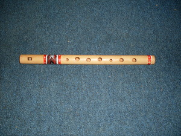
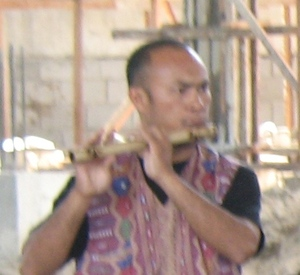

pulendag  
/pulɔndag/
n.
“flute”
n.
a long flute, usually made of balakayu bamboo
Wrd.Gloss: flute
Ka pulendag innimu ligkat te baktek, bulekew, laye ne eglung-lungahen ka lawa kayi wey ke diyè te eggiyupan piru kenè dè eglungahen ka pulipusan. Nakalkalasi se karakelan wey kalayatan kayi wey egpakasuling degma seini te naleinlein ne laheng. Sabeka degma seini te me kapandayan te me menubu wey ka duma ne neleinlein se linalahan.
Egkeupian a ne egkateu ne egpangimu te pulendag su eyew egpakapanulu a degma te duma ku.
I want to know how to make a flute so that I can teach also my companions .
Eggimu e pad te pulendag su igpamasku ku diyè te ki suled te aldew te Disimbil te pitsa 25.
I will make a flute so that I can play it and request a donation from brother on December the twenty-fifth.
cf. lantuy
Eng. flute; instrument variety
Tag. plaúta
Ceb. plawta
Ilo.: plúta
OCM: Musical Instruments (534)
Online dict status: -
Usage level: M
vi.
for someone (egpamulendag, agent, eg><ø-paN-) to play a pulendag flute
Eng. play flute; music, play
Online dict status: -
Usage level: R
Updated by: RJH
Last updated: 13/Oct/2009
This page last updated: 19/May/2012
Copyright © 2009-2010, Matigsalug Language Christian Association, Inc